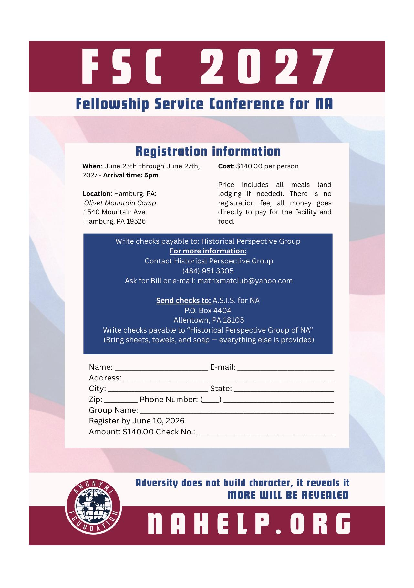

Current conference information
FSC 2027 Registration
The complete registration form is on the flyer from Volume 63. Open it full size or download the image for printing and sharing with your Home Group.
Flyer disclaimer: This flyer was developed by a Grey Area Group member and has not been approved by the Fellowship Service Conference. It is provided for informational purposes only.

Registration details
- When
- Friday, June 25 through Sunday, June 27, 2027. Arrival is 5:00 PM Friday.
- Where
- Olivet Mountain Camp, 1540 Mountain Avenue, Hamburg, PA 19526.
- Cost
- $140 per person. Meals and lodging are included. There is no separate registration fee.
- Payment
- Make checks payable to Historical Perspective Group of NA. Mail to A.S.I.S. for NA, P.O. Box 4404, Allentown, PA 18105.
- Questions
- Historical Perspective Group — ask for Bill: (484) 951-3305 or matrixmatclub@yahoo.com.
- Packing note
- Bring sheets, towels, and soap. Everything else is provided.

Conference documents
CAR & Motions
The current Conference Report and related Home Group revision material are stored directly on this site so Home Groups can open or download them without leaving the FSC page. CAR means Conference Agenda Report.
2027
Conference Report / CAR
The New/Old NA Way, Volume 63 - August 2026. Includes the 2026 FSC chair and treasurer reports, current motion results, new proposals for 2027, articles, and the FSC 2027 registration flyer.
2026
FSC Motion Results
Volume 63 records the old-business motion outcomes from the 2026 Fellowship Service Conference and lists the new proposals that may become finalized motions for the 2027 FSC.
TTTB
The Ties That Bind Group Revisions
January approval revision material from The Ties That Bind Group for Home Group review alongside the current FSC conference materials.
At a glance
Current FSC Motions
A quick index only. Read the complete Volume 63 Conference Report before your Home Group considers or discusses any motion.
- Motion 2025-B: To formally remove abstain from the voting procedure. Result: did not pass.
- Motion 2026-A: Participating Home Groups share payment for the post-office box used by the FSC and Anonymi Foundation. Result: first-year motion did not pass.
- Motion 2026-B: Approve the informational pamphlet Concerning Relapse. Result: passed.
- Motion 2026-C: Approve One Addict’s Experience with Group Conscience through the Steps. Result: first-year motion did not pass.
These summaries are taken from The New/Old NA Way, Volume 63 - August 2026. Proposals and motions can be modified until January 1, 2027, when proposals turn into finalized motions for the 2027 FSC.